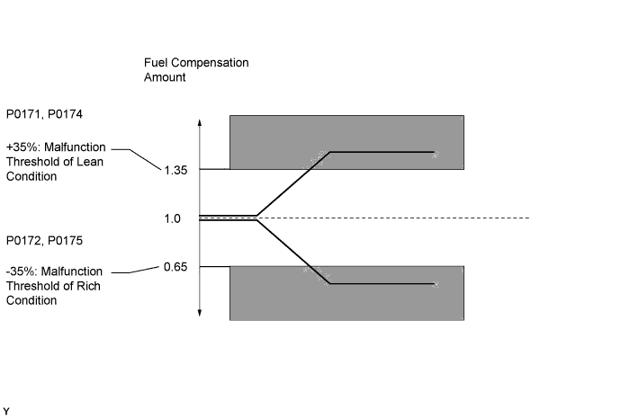
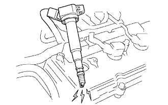
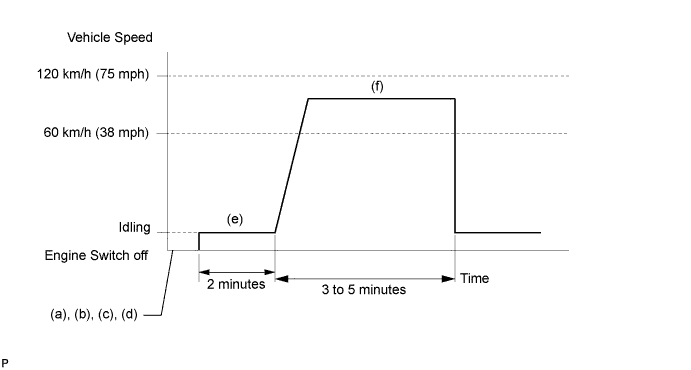

DTC P0171 System Too Lean (Bank 1) |
DTC P0172 System Too Rich (Bank 1) |
DTC P0174 System Too Lean (Bank 2) |
DTC P0175 System Too Rich (Bank 2) |
| DTC Code | DTC Detection Condition | Trouble Area |
| P0171 P0174 | With a warm engine and stable air-fuel ratio feedback, the fuel trim is considerably in error to the lean side (2 trip detection logic). |
|
| P0172 P0175 | With a warm engine and stable air-fuel ratio feedback, the fuel trim is considerably in error to the rich side (2 trip detection logic). |
|

| 1.CHECK ANY OTHER DTCS OUTPUT (IN ADDITION TO DTC P0171, P0172, P0174 OR P0175) |
Connect the intelligent tester to the DLC3.
Turn the engine switch on (IG) and turn the tester on.
Enter the following menus: Powertrain / Engine and ECT / DTC.
Read DTCs.
| Result | Proceed to |
| P0171, P0172, P0174 or P0175 is output | A |
| P0171, P0172, P0174 or P0175 and other DTCs are output | B |
|
| ||||
| A | |
| 2.PERFORM ACTIVE TEST USING INTELLIGENT TESTER (A/F CONTROL) |
Connect the intelligent tester to the DLC3.
Start the engine and turn the tester on.
Warm up the engine at an engine speed of 2500 rpm for approximately 90 seconds.
Enter the following menus: Powertrain / Engine and ECT / Active Test / Control the Injection Volume for A/F Sensor.
Perform the Control the Injection Volume for A/F Sensor operation with the engine in an idling condition (press the RIGHT or LEFT button to change the fuel injection volume).
Monitor the output voltages of A/F and HO2 sensors (AFS B1 S1 and O2S B1 S2 or AFS B2 S1 and O2S B2 S2) displayed on the tester.
| Case | A/F Sensor (Sensor 1) Output Voltage | HO2 Sensor (Sensor 2) Output Voltage | Main Suspected Trouble Area |
| 1 |   |  | - |
| 2 |  | |
|
| 3 | | |
|
| 4 | | |
|
| Result | Proceed to |
| Case 1 | C |
| Case 2 | B |
| Case 3 | A |
|
| ||||
|
| ||||
| A | |
| 3.CHECK MASS AIR FLOW METER |
Check the mass air flow meter (Click here).
|
| ||||
| OK | |
| 4.READ VALUE USING INTELLIGENT TESTER (COOLANT TEMP) |
Connect the intelligent tester to the DLC3.
Turn the engine switch on (IG) and turn the tester on.
Enter the following menus: Powertrain / Engine and ECT / Data List / Coolant Temp.
Read the Coolant Temp twice, when the engine is both cold and warmed up.
|
| ||||
| OK | |
| 5.CHECK PCV HOSE CONNECTIONS |
Check the PCV hose connections.
|
| ||||
| OK | |
| 6.CHECK AIR INDUCTION SYSTEM |
Check the air induction system for vacuum leakage (Click here).
|
| ||||
| OK | |
| 7.CHECK FOR SPARKS AND IGNITION |
 |
Disconnect the fuel injector connectors to prevent the engine from starting.
Remove the ignition coil from the cylinder head (Click here).
Install the spark plug onto the ignition coil.
Attach the spark plug assembly to the cylinder head.
Crank the engine for less than 2 seconds and check the spark.
Install the ignition coil.
Reconnect the injector connectors.
|
| ||||
| OK | |
| 8.CHECK FOR EXHAUST GAS LEAK |
Check for exhaust gas leakage.
|
| ||||
| OK | |
| 9.CHECK FUEL PRESSURE |
Check the fuel pressure (Click here).
|
| ||||
| OK | |
| 10.INSPECT FUEL INJECTOR (INJECTION AND VOLUME) |
Check the injection volume (Click here).
|
| ||||
| OK | |
| 11.INSPECT AIR-FUEL RATIO SENSOR (HEATER RESISTANCE) |
 |
Disconnect the Air-Fuel Ratio (A/F) sensor connector.
Measure the resistance according to the value(s) in the table below.
| Tester Connection | Condition | Specified Condition |
| 1 (HA1A) - 2 (+B) | 20°C (68°F) | 1.8 to 3.4 Ω |
| 1 (HA1A) - 4 (A1A-) | Always | 10 kΩ or higher |
| 1 (HA2A) - 2 (+B) | 20°C (68°F) | 1.8 to 3.4 Ω |
| 1 (HA2A) - 4 (A2A-) | Always | 10 kΩ or higher |
|
| ||||
| OK | |
| 12.INSPECT INTEGRATION RELAY (A/F RELAY) |
 |
Remove the integration relay from the engine room relay block.
Inspect the A/F fuse.
Remove the A/F fuse from the integration relay.
Measure the resistance according to the value(s) in the table below.
| Tester Connection | Condition | Specified Condition |
| A/F fuse | Always | Below 1 Ω |
Reinstall the A/F fuse.
Inspect the integration relay (A/F).
Measure the resistance according to the value(s) in the table below.
| Tester Connection | Condition | Specified Condition |
| 1C-1 - 1A-4 | Battery voltage not applied to terminals 1A-2 and 1A-3 | 10 kΩ or higher |
| Battery voltage applied to terminals 1A-2 and 1A-3 | Below 1 Ω |
|
| ||||
| OK | |
| 13.CHECK HARNESS AND CONNECTOR (A/F SENSOR - ECM) |
 |
Disconnect the A/F sensor connector.
Measure the voltage according to the value(s) in the table below.
| Tester Connection | Switch Condition | Specified Condition |
| C22-2 (+B) - Body ground | Engine switch on (IG) | 11 to 14 V |
| C23-2 (+B) - Body ground | Engine switch on (IG) | 11 to 14 V |
Turn the engine switch off.
Disconnect the ECM connector.
Measure the resistance according to the value(s) in the table below.
| Tester Connection | Condition | Specified Condition |
| C22-1 (HA1A) - C45-22 (HA1A) | Always | Below 1 Ω |
| C22-3 (A1A+) - C45-126 (A1A+) | Always | Below 1 Ω |
| C22-4 (A1A-) - C45-125 (A1A-) | Always | Below 1 Ω |
| C23-1 (HA2A) - C45-20 (HA2A) | Always | Below 1 Ω |
| C23-3 (A2A+) - C45-103 (A2A+) | Always | Below 1 Ω |
| C23-4 (A2A-) - C45-102 (A2A-) | Always | Below 1 Ω |
| C22-1 (HA1A) or C45-22 (HA1A) - Body ground | Always | 10 kΩ or higher |
| C22-3 (A1A+) or C45-126 (A1A+) - Body ground | Always | 10 kΩ or higher |
| C22-4 (A1A-) or C45-125 (A1A-) - Body ground | Always | 10 kΩ or higher |
| C23-1 (HA2A) or C45-20 (HA2A) - Body ground | Always | 10 kΩ or higher |
| C23-3 (A2A+) or C45-103 (A2A+) - Body ground | Always | 10 kΩ or higher |
| C23-4 (A2A-) or C45-102 (A2A-) - Body ground | Always | 10 kΩ or higher |
| Tester Connection | Condition | Specified Condition |
| C22-1 (HA1A) - C46-22 (HA1A) | Always | Below 1 Ω |
| C22-3 (A1A+) - C46-126 (A1A+) | Always | Below 1 Ω |
| C22-4 (A1A-) - C46-125 (A1A-) | Always | Below 1 Ω |
| C23-1 (HA2A) - C46-20 (HA2A) | Always | Below 1 Ω |
| C23-3 (A2A+) - C46-103 (A2A+) | Always | Below 1 Ω |
| C23-4 (A2A-) - C46-102 (A2A-) | Always | Below 1 Ω |
| C22-1 (HA1A) or C46-22 (HA1A) - Body ground | Always | 10 kΩ or higher |
| C22-3 (A1A+) or C46-126 (A1A+) - Body ground | Always | 10 kΩ or higher |
| C22-4 (A1A-) or C46-125 (A1A-) - Body ground | Always | 10 kΩ or higher |
| C23-1 (HA2A) or C46-20 (HA2A) - Body ground | Always | 10 kΩ or higher |
| C23-3 (A2A+) or C46-103 (A2A+) - Body ground | Always | 10 kΩ or higher |
| C23-4 (A2A-) or C46-102 (A2A-) - Body ground | Always | 10 kΩ or higher |

|
| ||||
| OK | |
| 14.REPLACE AIR FUEL RATIO SENSOR |
Replace the air fuel ratio sensor (Click here).
| NEXT | |
| 15.PERFORM CONFIRMATION DRIVING PATTERN |

| NEXT | |
| 16.CHECK WHETHER DTC OUTPUT RECURS (DTC P0171, P0172, P0174 OR P0175) |
Enter the following menus: Powertrain / Engine and ECT / DTC.
Read DTCs.
| Result | Proceed to |
| No DTC is output | A |
| P0171, P0172, P0174 or P0175 is output | B |
|
| ||||
| A | ||
| ||